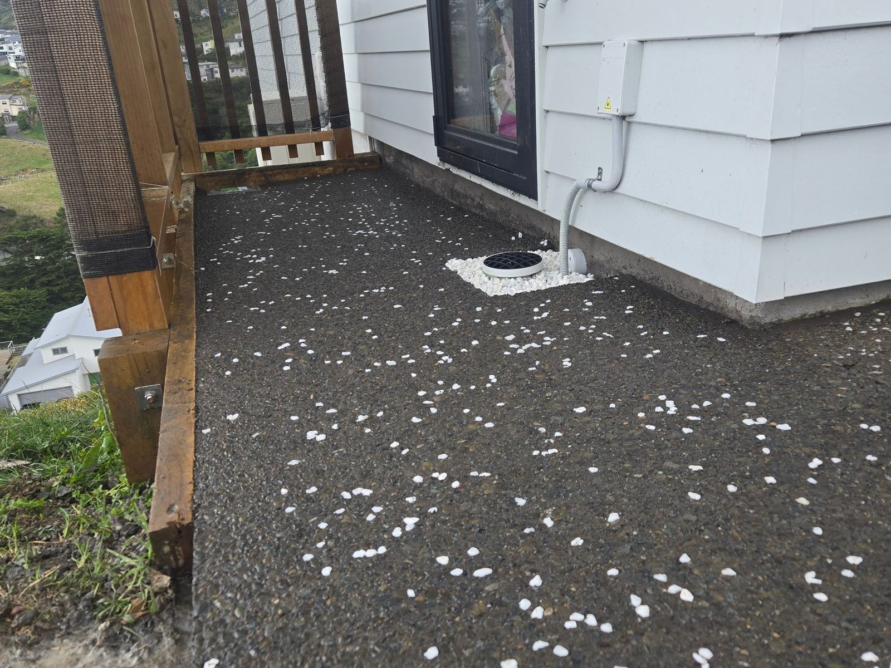
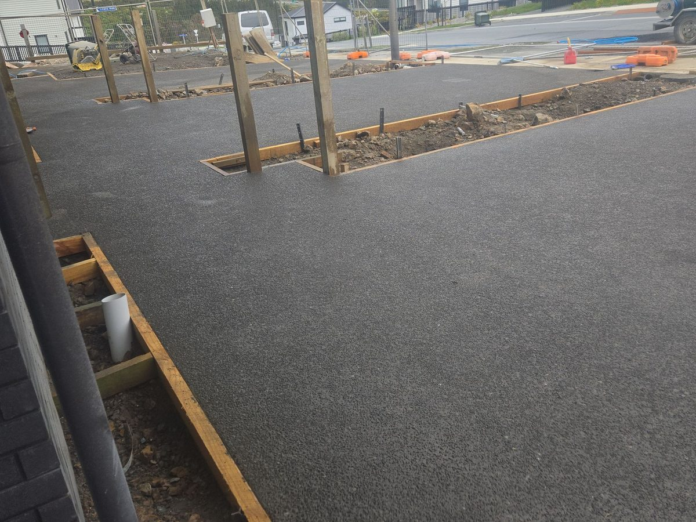
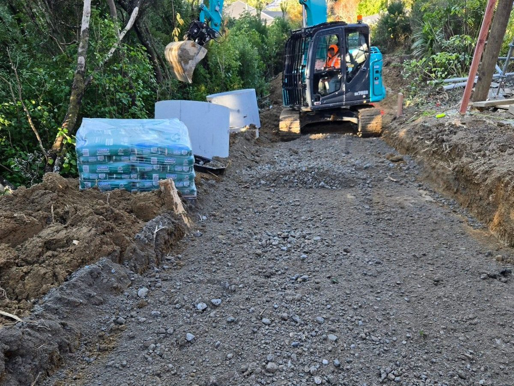
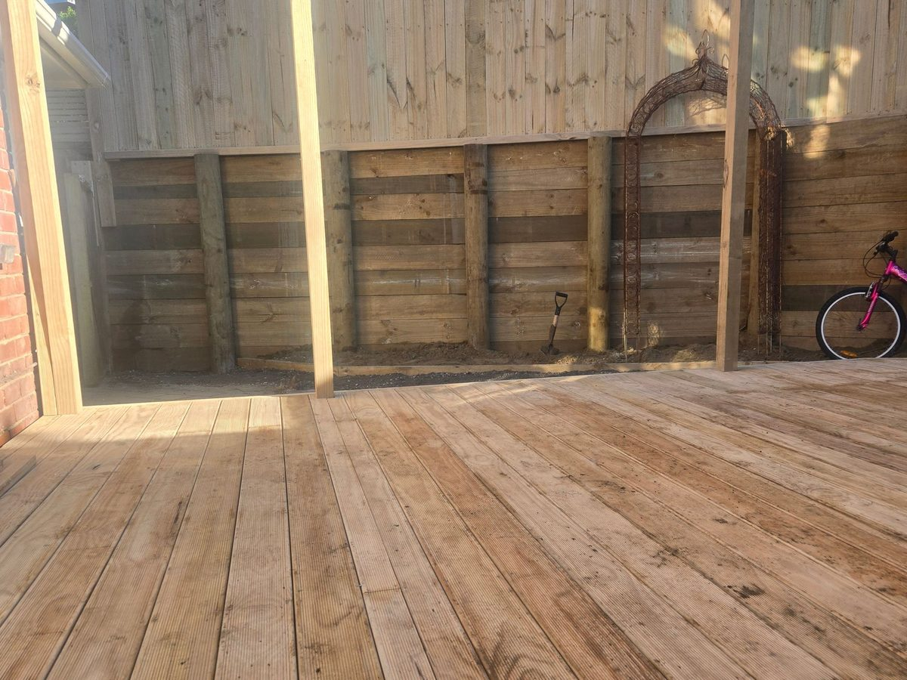
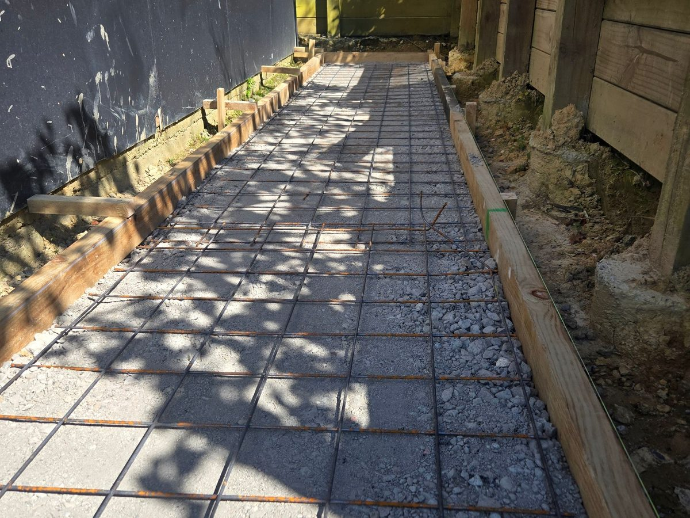
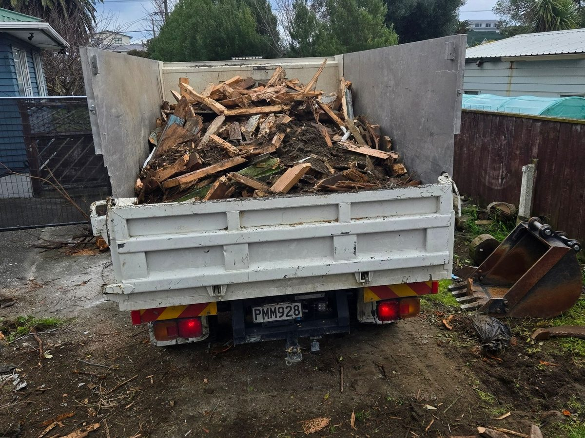
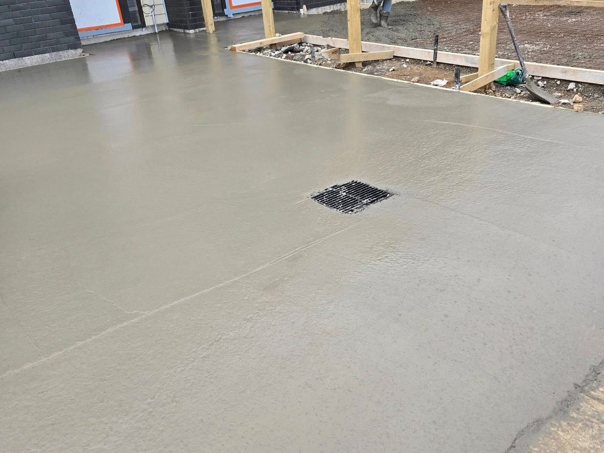
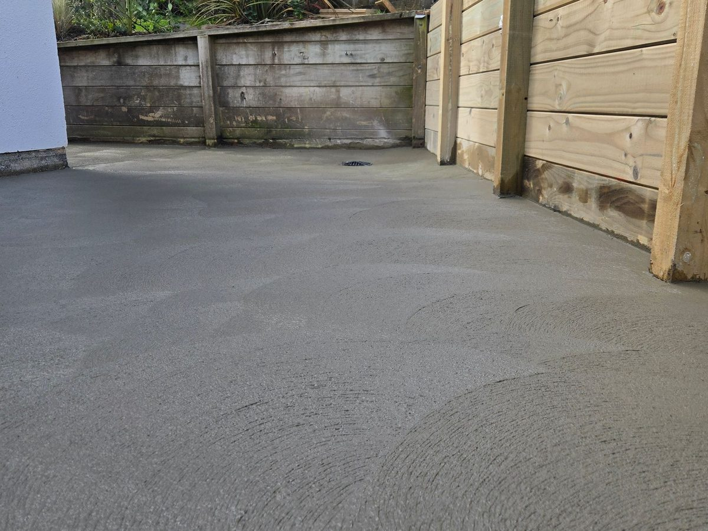
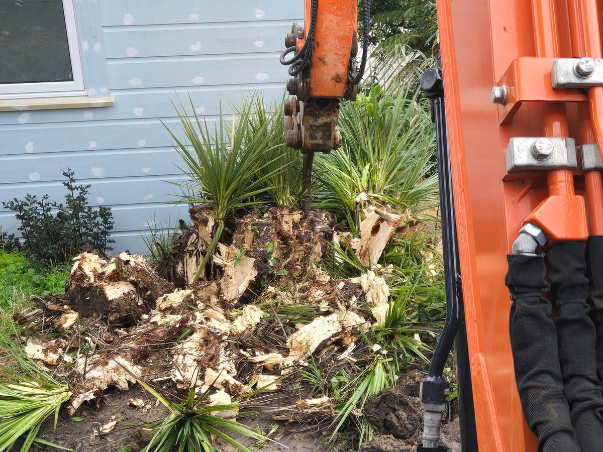
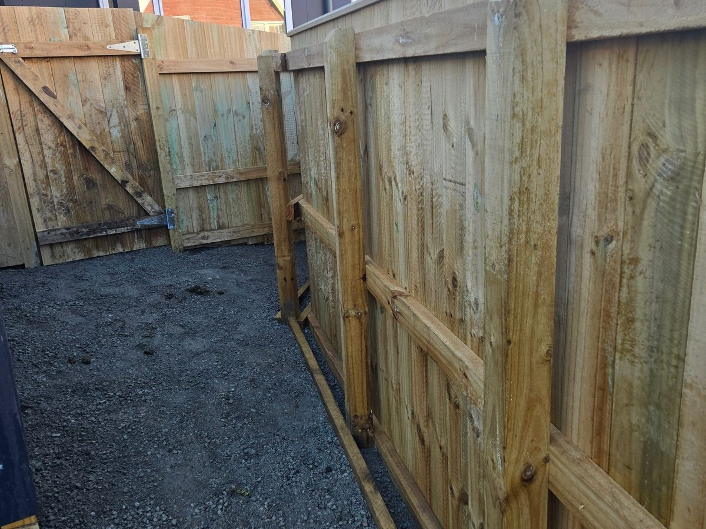

Project gallery
Filter by the kind of job you're planning.
Suburb, size and timeframe on every job, so you can see what's realistic for yours.

Photo · Exposed aggregate path and entryConcrete · Exposed aggregateExposed aggregate path and entryFormed, poured and washed off by our own crew
 Photo · Timber wall with fence above
Photo · Timber wall with fence aboveRetainingTimber wall with fence aboveH5 posts, drainage behind, fence tied in on top

Photo · Townhouse driveway, broom finishConcreteTownhouse driveway, broom finishOld surface out, boxed, poured and cut

Photo · Base course for a new drivewayExcavationBase course for a new drivewayDug out, metal brought in and compacted

Photo · Pine deck and privacy fenceDecksPine deck and privacy fenceDeck and fence built as one job

Photo · Paved path, formed and setLandscapingPaved path, formed and setPavers on a compacted base with edge restraint

Photo · Garage demolition and cart-awayDemolitionGarage demolition and cart-awayTaken down, loaded on our tipper, site swept

Photo · Slab poured with a channel drainConcreteSlab poured with a channel drainBoxed, mesh in, drain set before the pour

Photo · Concrete pad under a timber wallConcrete · RetainingConcrete pad under a timber wallPad and retaining done as one job

Photo · Stump and scrub removalExcavationStump and scrub removalStumps out with the digger, carted away

Photo · Paling fence and gateFencesPaling fence and gateSide-path fence with a timber gate
 Photo · Hillside section cleared and shaped
Photo · Hillside section cleared and shapedLandscapingHillside section cleared and shapedCleared, cut and prepped for retaining and lawn
More jobs on our Facebook page.